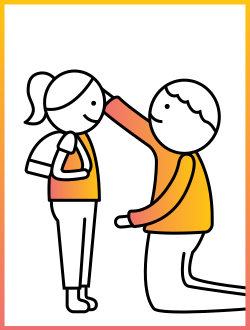

"There's a difference between verbal abuse and constructive criticism."
While many parent-child conversations can lead to misunderstandings, becoming an effective communicator is not only possible—it can even be fun! This section will include tips on effective communication with children by age, understanding the child's development, using words they can hear and techniques that make sense. The information is based on successful strategies that parents and experts have used with children.
COMMUNICATE IT RIGHT
01 SPEND TIME LISTENING
Parents spend so much time talking to their children, and wondering why they don't seem to hear them. It is often that the parents talk without understanding how their children receive the message. Listening to and repeating after the child is one of the key strategies to communicate effectively.
Specific actions like making eye contact, kneeling down to your child's level and even tilting your head show your child you are listening. "If you find yourself thinking of your response while your child is talking, then you're not really listening." — Michael Thompson, Ph.D. Co-author, Raising Cain, Senior Project Advisor
If you are on an important phone call and can't talk to your child at that moment, ignoring the child or saying "shut up" in a stern voice just isn't appropriate. You might say "Let's talk in a few minutes; I'm in the middle of something," to let her know you will definitely listen to her afterwards.
NEXT ⟶
This informaiton is based on 'Talking with Kids', pbs.org, accessed February 2017
Psychological abuse of a child is a pattern of intentional verbal or behavioral actions or lack of actions that convey to a child the message that he or she is worthless, flawed, unloved, unwanted, endangered, or only of value to meet someone else's needs.
— Samantha Gluck
COMMUNICATION APPROACHED BY AGE
BABIES & TODDLERS (0–2)
CHILD'S APPROACH
Crying and short phrases are how toddlers communicate. They use words such as "No" and "mine" to claim space and take control of their new world. It is developmentally important for a toddler to say these words. Asserting their independence is an early, important step towards becoming their own person, seperate from you.
PARENT'S APPROACH
Be aware that tone and body language make a difference. When a baby hears "Stop!" he will sometimes cry, because he is reacting to the sharpness of the command. Using a soft, loving voice when will comfort your child because of the soothing tone. Also, talk to your child even if you're not sure if he understands! He will copy things you do or say so make a good example for him to follow.
NEXT ⟶
This informaiton is based on 'Talking with Kids', pbs.org, accessed February 2017
It is so important for an adult to apologize because it shows the child it's OK to make mistakes and say you are sorry. When you say, 'I shouldn't have done that,' your child will have a rock-solid sense that her feelings matter to the people who are most important in her life.
— John Gottman, Ph.D.
COMMON STRESSFUL SITUATIONS
SCENARIO
A toddler always spills his food. You tell him to stop but never succeed.
WHAT'S HAPPENING?
Toddlers are simply discovering and asserting themselves into the world. They need to feel the texture and colors of the food, and what will happen if they drop it on the ground.
WHAT TO DO?
To limit the mess while giving allowing the child to discover the world, place a large wipeable mat underneath the high chair so you're not worried about his messy eating. Don't instantly clean up everytime he makes a mess as this will drive you mad and it might tempt him to play a game of "Let's see how many times Mom will pick up my cup!"
Be sure you know when enough is enough; if he throws more food than he's eating, it's probably time to end the meal.
NEXT ⟶